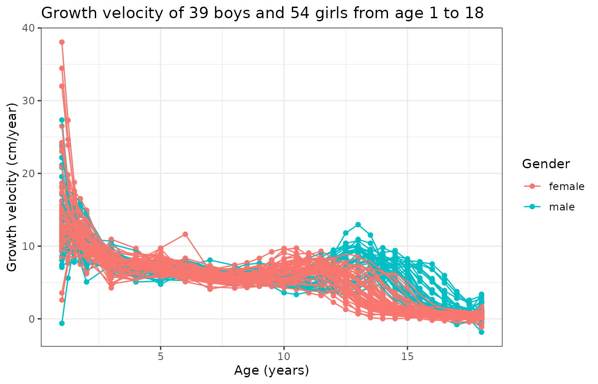
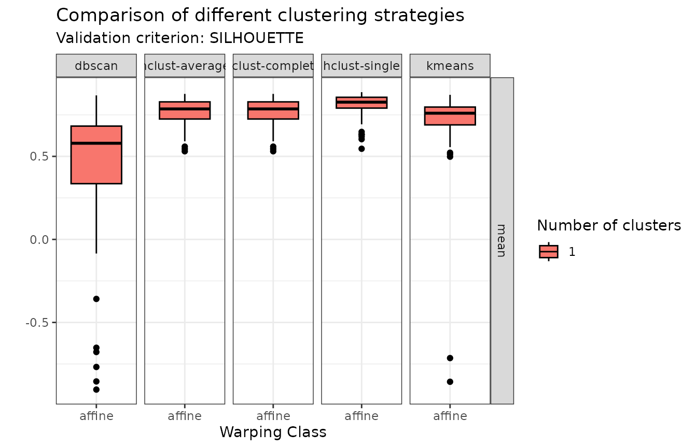
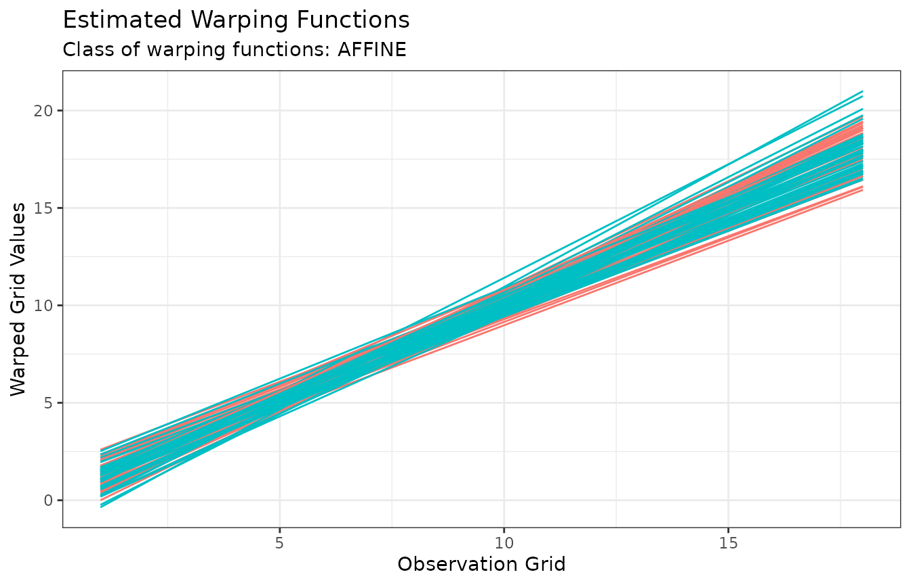

The Berkeley growth data
A total of 93 children (39 boys and 54 girls) have been followed on which the height in cm has been measured over time on a common grid of age:
growth <- fda::growth
mb <- as.factor(c(rep("male", dim(growth$hgtm)[2]), rep("female", dim(growth$hgtf)[2])))
N <- length(mb)
x <- growth$age
M <- length(x)
y0 <- cbind(growth$hgtm, growth$hgtf)
tibble::tibble(
Age = replicate(N, x, simplify = FALSE),
Height = purrr::array_tree(y0, margin = 2),
Gender = mb,
CurveID = 1:N
) |>
tidyr::unnest(cols = c(Age, Height)) |>
ggplot(aes(Age, Height, color = Gender, group = CurveID)) +
geom_point() +
geom_line() +
theme_bw() +
labs(
title = "Heights of 39 boys and 54 girls from age 1 to 18",
x = "Age (years)",
y = "Height (cm)"
)A single observation is actually a time series \(\mathbf{x}_i = (x_i(t_1), \dots, x_i(t_M))^\top\). We can hypothesize that we know what happened between any two consecutive points \(t_j\) and \(t_{j+1}\) even though we did not observe the data in \((t_j, t_{j+1})\). This is usually achieved via splines or Fourier or wavelet basis decomposition to confer the observation with some degree of regularity and to account for possible periodicity or other specificity of the data point. This step of data representation effectively transforms the original observation \(\mathbf{x}_i\) which was a time series into a functional data point \(x_i : \mathcal{D} \to \mathcal{M}\).
Functional data representation
Given an orthonormal basis \(\{e_b\}_{b\ge 1}\) of the functional space which observations are assumed to belong to, we can model observation \(x_i\) as:
\[ x_i = f_i + \varepsilon_i, \] where: \[ f_i(t) = \sum_{b=1}^B f_{ib} e_b(t), \] for some truncation \(B\). The coefficients \(f_{ib}\) are then adjusted by minimizing a cost function that usually includes the data attachment term and a rougness penalty term as a way to enforce some regularity into the functional representation. It is common to use for instance the norm of the second derivative as roughness penalty, in which case the cost function becomes:
\[ \sum_{m=1}^M \left( x_i(t_m) - f_i(t_m) \right)^2 + \lambda \sum_{m=1}^M \left[ f_i^{(2)}(t_m) \right]^2 \]
In practice, such a functional representation can be achieved in R using the fda package. The following code adjusts a B-spline representation to the growth curves where the weight \(\lambda\) of the roughness penalty is determined by minimizing the generalized cross-validation criterion:
basisobj <- fda::create.bspline.basis(rangeval = range(x), nbasis = 15)
fd_vals <- purrr::map(1:N, \(n) {
yobs <- y0[, n]
result <- fda::smooth.basis(x, yobs, basisobj)
yfd <- result$fd
cost <- function(lam) {
yfdPar <- fda::fdPar(yfd, 2, lam)
out <- fda::smooth.basis(x, yobs, yfdPar)
out$gcv
}
lambda_opt <- stats::optimise(cost, c(1e-8, 1))$minimum
if (lambda_opt <= 1e-8)
cli::cli_alert_warning("The optimal penalty has reached the lower bound (1e-8) for curve #{n}.")
if (lambda_opt >= 1)
cli::cli_alert_warning("The optimal penalty has reached the upper bound (1) for curve #{n}.")
yfdPar <- fda::fdPar(yfd, 2, lambda_opt)
fda::smooth.fd(yfd, yfdPar)
})
fd <- fda::fd(
coef = fd_vals |>
purrr::map("coefs") |>
purrr::reduce(cbind),
basisobj = basisobj
)We can now take a look of the data under this representation:
y0 <- fda::eval.fd(x, fd, 0)
tibble::tibble(
Age = replicate(N, x, simplify = FALSE),
Height = purrr::array_tree(y0, margin = 2),
Gender = mb,
CurveID = 1:N
) |>
tidyr::unnest(cols = c(Age, Height)) |>
ggplot(aes(Age, Height, color = Gender, group = CurveID)) +
geom_point() +
geom_line() +
theme_bw() +
labs(
title = "Heights of 39 boys and 54 girls from age 1 to 18",
x = "Age (years)",
y = "Height (cm)"
)
We can also compute and display the growth rate:
y1 <- fda::eval.fd(x, fd, 1)
tibble::tibble(
Age = replicate(N, x, simplify = FALSE),
Height = purrr::array_tree(y1, margin = 2),
Gender = mb,
CurveID = 1:N
) |>
tidyr::unnest(cols = c(Age, Height)) |>
ggplot(aes(Age, Height, color = Gender, group = CurveID)) +
geom_point() +
geom_line() +
theme_bw() +
labs(
title = "Growth velocity of 39 boys and 54 girls from age 1 to 18",
x = "Age (years)",
y = "Growth velocity (cm/year)"
)
This graph is interesting because it tells us that
- there is a first peak of growth velocity common to boys and girls early in age, just after birth;
- there is a second peak of growth velocity corresponding to puberty that happens earlier for girls;
- the variability of this second peak is due to gender and also inter-subject variability.
In particular, if one wanted to perform clustering of these curves to label boys and girls (assuming we did not have such an information), then the above figures show that the best chance we have to accomplish such a clustering is by performing a joint alignment and clustering of the growth velocity curves so that we can simultaneously (i) minimize within-group phase variability and (ii) cluster curves based on that same phase variability.
Clustering
Initial visualization and data representation steps have revealed that, if one aims at clustering individuals based on gender, then (s)he should focus on:
- searching for 2 clusters;
- using the growth velocity curves instead of the growth curves themselves;
- cluster based on phase variability;
- perform intra-cluster alignment to separate amplitude and phase variability.
However, we still have several possible clustering methods that we can explore to perform such a task. Namely, fdacluster implements the \(k\)-means algorithm as well as hierarchical clustering and DBSCAN. We can compare these different clustering strategies:
growth_mcaps <- compare_caps(
x = x,
y = t(y1),
n_clusters = 2,
metric = "l2",
clustering_method = c(
"kmeans",
"hclust-complete",
"hclust-average",
"hclust-single",
"dbscan"
),
warping_class = "affine",
centroid_type = "mean",
cluster_on_phase = TRUE
)This generates an object of class mcaps
which has specialized S3 methods for both graphics::plot()
and ggplot2::autoplot().
When called on an object of class mcaps, these methods gain
the optional arguments:
-
validation_criterionto choose which validation criterion to display between distance-to-center (validation_criterion = "wss") and silhouette values (validation_criterion = "silhouette"); -
whatto choose whether only the mean criterion should be displayed (what = "mean") or the entire distribution across observation in the form of a boxplot (what = "distribution").
plot(growth_mcaps, validation_criterion = "wss", what = "distribution")In terms of within-cluster distances to center (WSS), hierarchical agglomerative clustering with average or complete linkage and \(k\)-means stand out.
plot(growth_mcaps, validation_criterion = "silhouette", what = "distribution")
In terms of individual silhouette values, DBSCAN does not appear in the comparison because it auto-detects the number of clusters and only found 1 cluster. Of the other methods, hierarchical agglomerative clustering with average or complete linkage stand out.
We can therefore proceed with hierarchical agglomerative clustering with complete linkage for example:
growth_caps <- fdahclust(
x = x,
y = t(y1),
n_clusters = 2,
metric = "l2",
warping_class = "affine",
centroid_type = "mean",
cluster_on_phase = TRUE
)This generates an object of class caps
which has specialized S3 methods for both graphics::plot()
and ggplot2::autoplot().
When called on an object of class caps,
these methods gain the optional argument type which can be
one of amplitude or phase.
The default is type = "amplitude" in which case curves
before and after alignment are shown and colored by cluster
membership:
plot(growth_caps, type = "amplitude")
When type = "phase", the warping functions are instead
displayed which gives a sense of the phase variability in the data
after phase alignment. Again, they are colored by cluster
membership:
plot(growth_caps, type = "phase")It is also possible to show a visual inspection of internal cluster
validation via the diagnostic_plot()
function, which shows individual distance-to-center and silhouette
values, with observations ordered by decreasing value of intra-cluster
silhouette:
diagnostic_plot(growth_caps)Finally, we can explore the correspondence between the non-supervised groups that we found and the actual gender distribution:
| female | male | |
|---|---|---|
| Group 1 | 9 | 38 |
| Group 2 | 45 | 1 |
The second group is almost entirely composed of girls while the first group is mainly composed of men although 23.68% of girls are present in that group. It could be interesting to dig more into the other characteristics of these girls which might explain why our clustering sees them as boys as well as understanding why 1 boy is seen as a girl.